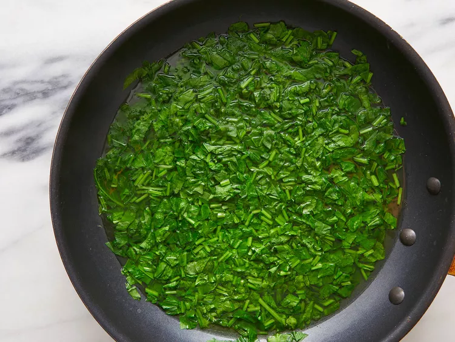
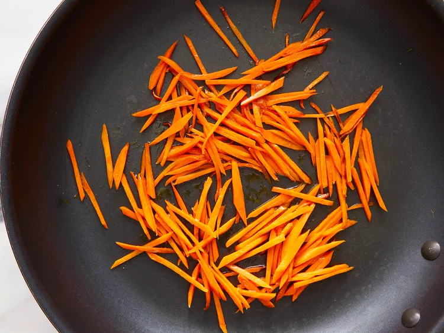
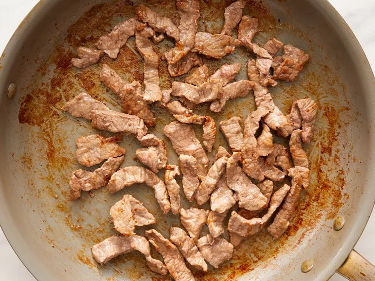

Bibimbap

Korean Rice With Mixed Add Ons
A popular and traditional Korean meal which involves
white rice (often leftover from a previous meal) being
stirfried with other ingredients.
Like many foods, Bibimbap has no 'true' recipe and
the exact ingredients are all dependent upon the individual
maker. For the sake of our recipe however,we will be using some
of the more commenly used ingredients.
Ingredients Required For this Recipe
For our variation of this traditional food, you will need to do the following:
- 1 English Cucumber - Cut Into Matchsticks
- 1/4 Cup Gochujang(Korean Hot Pepper Paste)(Optional)
- 1 Bunch Fresh Spinach - Cut Into Thin Strips
- 1 Tablespoon of Soy Sauce
- 2 Teaspoons Olive Oil
- 2 Carrots-Cut Into Matchsticks
- 1 Garlic Clove - Minced
- 1 Pinch Red Pepper Flakes
- 1 Pound Streak - Thinly-sliced
- 4 Large Eggs
- 1 Quart of Cooked White Rice
- 4 Teaspoons of Toasted Sesame Oil
- 1 Teaspoon of Sesame Seeds
- 2 Teaspoons of Gochujang
Steps Into Making
- Stir together cucumber pieces and gochujang paste in a bowl; set aside.
- Bring about 2 cups of water to a boil in a large nonstick skillet
and stir in spinich; cook until bright green and wilted - 2 to 3 minutes.

- Drain spinich and squeeze out as much moisture as possible.
Afterwards, set aside in a bowl and stir in soy sauce.
- Heat 1 teaspoon olive oil in a large nonstick skillet; cook and stir carrots
until softened - abour 3 minutes.

- Stir in garlic and cook just unitl fragrant, about 1 minute.
Sit in cucumber mixture; sprinkle with red pepper flakes.
Set carrot mixture aside in a bowl.
- Brown beef in a cleen nonstick skillet over medium heat, about 5
minutes per side; set aside.

- Heat remaining 1 teaspoon of olive oil in a nother nonstick skillet
over medium low heat. Fry eggs just on one side until yolks are runny,
but whites are firm - 2 to 4 minutes.
- Divide cooked rice into 4 large serving bowls; top with spinach mixture,
a few pieces of beef and cucumber mixture.
- Place 1 egg atop each serving. Drizzle each bowl with 1 teaspoon
sesame oil, a sprinkle of sesame seeds, and a small amount of
gocujang paste.
- Enjoy!